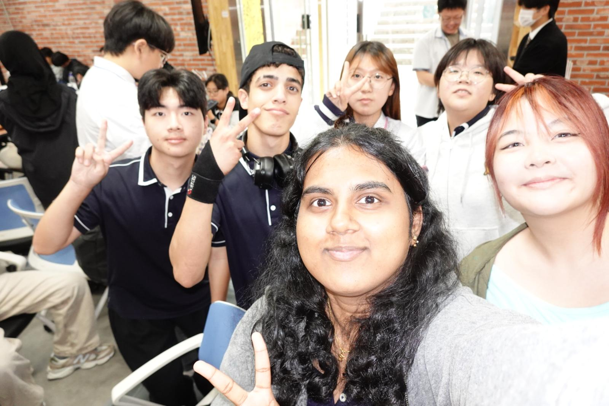
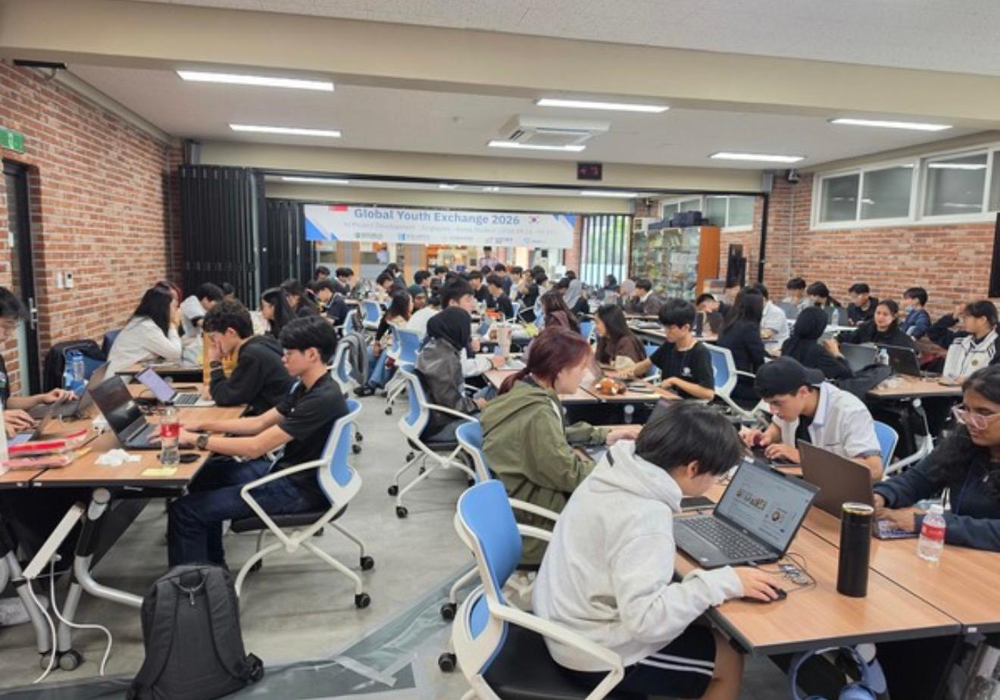
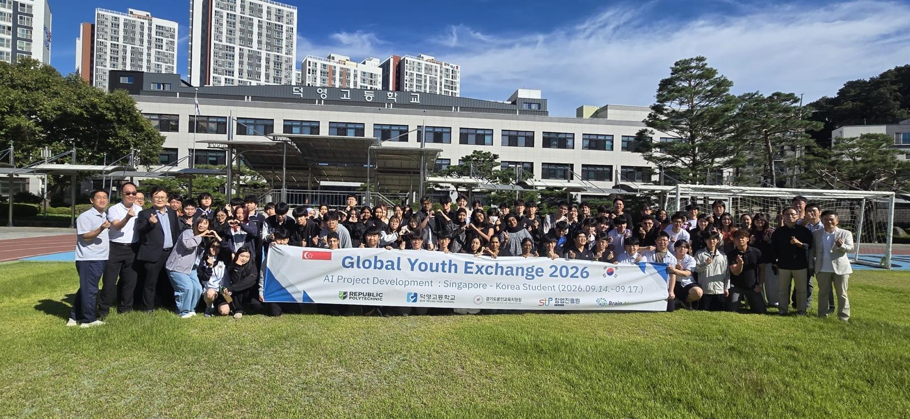

INTERNATIONAL EXPERIENCE · SOUTH KOREA · JULY – SEPTEMBER 2026
The Gemini Accelerator.
Singapore–South Korea Global Youth Exchange · Cross-Border Team Lead (Peer-Nominated)
Building ideas across borders.
I participated in an international innovation and cultural exchange programme, travelling to South Korea to collaborate with students from both countries.
I was peer-nominated to lead a team of four, consisting of two Singaporean and two South Korean students. I coordinated project milestones, supported cross-cultural communication and helped guide the team through the five stages of Design Thinking.
Before the exchange, I completed preparatory training covering project development, Design Thinking and cross-cultural communication.

JobFit — an idea for students.
Our team developed JobFit, a concept for a student-focused part-time job matching platform that considers students’ school schedules, commuting preferences and age eligibility. The idea addressed challenges such as timetable conflicts, lengthy travel and age restrictions when looking for part-time work.
Using Google's generative AI tools, we created an interactive prototype to demonstrate how the proposed platform could work. It was a concept prototype, not a fully functioning or launched job-matching service. The main focus was developing and communicating an innovative solution.
We also gathered user feedback, developed a business and marketing strategy, and pitched the concept to an evaluation panel of industry professionals.


Featured in South Korean media.
Our participation and project experience received coverage in South Korean publications. Read the two selected articles below.